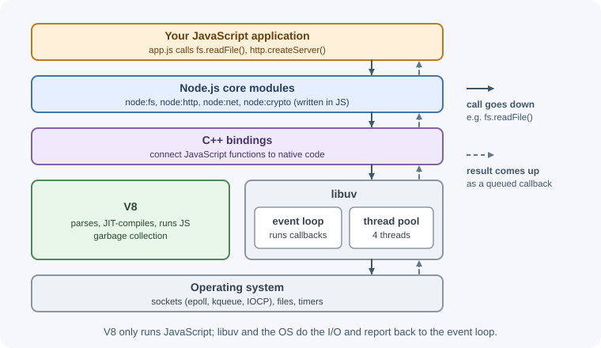
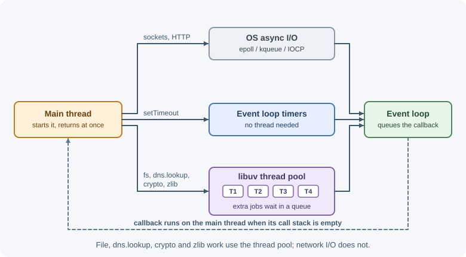

Node.js Runtime and Architecture¶
Node.js is an open-source, cross-platform JavaScript runtime that runs JavaScript outside the browser. It combines Google's V8 engine with a C library called libuv and a set of built-in modules, so JavaScript programs can read files, open network connections, and run as long-lived servers.
Why it matters¶
Knowing how Node.js is built explains most of its behavior: why one process can serve thousands of concurrent connections, why a single slow loop can freeze an entire server, and why some "asynchronous" operations still use threads. Backend developers who understand the runtime write code that stays responsive under load and know when Node.js is the wrong tool.
Real-world usage¶
- Netflix rebuilt the netflix.com website UI on Node.js and React so the same JavaScript could render pages on the server and update them in the browser. The old stack used different languages on the server and the client, which made markup logic hard to share. The rebuild was part of an effort that cut startup time by 70% (Netflix Technology Blog: Making Netflix.com Faster).
- PayPal moved its web applications from Java to Node.js in 2013. In a side-by-side test of the same page, the Node.js version (built on Express) served double the requests per second, and its average response time was 35% lower (about 200 ms faster) (PayPal Tech Blog: Node.js at PayPal).
- Trello built its server in Node.js because instant updates meant holding many open connections, which suits an event-driven, non-blocking server. The first prototype was a single Node.js process talking to the browser over a WebSocket (Atlassian blog: The Trello tech stack).
- Visual Studio Code runs extensions in a separate Node.js "extension host" process, locally or on a remote machine. A slow extension therefore cannot freeze the editor's user interface (VS Code docs: Extension Host).
Popular tools and providers: Node.js, Deno, and Bun as runtimes; nvm and
Volta for versions; PM2 for process management; Chrome DevTools and
--cpu-prof for profiling.
How it works¶
The main building blocks¶

- V8 is the JavaScript engine also used in Chrome. It parses your code, compiles it to machine code with a just-in-time (JIT) compiler, runs it, and manages memory with a garbage collector. V8 knows nothing about files or sockets; it only executes JavaScript.
- libuv is a C library that provides the event loop and a uniform asynchronous I/O interface across Linux, macOS, and Windows. It also owns a small thread pool for work that the operating system cannot do asynchronously.
- C++ bindings connect JavaScript functions such as
fs.readFile()to the native code that performs the work. - Core modules such as
node:fs,node:http,node:path, andnode:cryptoare the JavaScript APIs you import. They are written partly in JavaScript and partly in C++.
Just-in-time compilation in V8¶
V8 does not interpret your code line by line forever. It first compiles JavaScript to bytecode and runs it with an interpreter (Ignition). Functions that run often become "hot" and are recompiled by optimizing compilers into fast machine code based on the types they have seen. If those assumptions break—for example, a function that always received numbers suddenly gets a string—V8 can deoptimize and fall back to slower code. Consistent object shapes and argument types help V8 keep code optimized.
Single-threaded JavaScript, non-blocking I/O¶
Your JavaScript runs on one main thread. At any moment, only one piece of your JavaScript is executing. Node.js stays fast because it does not wait for slow operations. When your code asks for a file or a network response, Node.js hands the work to libuv and immediately continues running other JavaScript. When the operation finishes, libuv queues a callback, and the event loop runs it when the main thread is free.
Request A arrives ──► JS handler starts DB query ──► returns immediately
Request B arrives ──► JS handler starts file read ──► returns immediately
... (main thread is free)
DB result ready ──► callback for A runs ──► response A sent
File ready ──► callback for B runs ──► response B sent
This model is called event-driven, non-blocking I/O. A thread-per-request server would need one thread (and its memory) per waiting request; Node.js needs one thread plus queued callbacks.
Where the work really happens¶
Not every asynchronous operation is handled the same way:
| Operation | How libuv performs it |
|---|---|
| TCP/UDP sockets, HTTP servers and clients | OS async mechanisms (epoll on Linux, kqueue on macOS, IOCP on Windows). No thread pool. |
Timers (setTimeout, setInterval) |
Tracked by the event loop itself. |
File system operations (fs.readFile, fs.stat, …) |
libuv thread pool, because most OSes lack portable async file APIs. |
dns.lookup() (used by http.get("example.com")) |
Thread pool (it calls the OS resolver getaddrinfo). |
dns.resolve*() |
Network-based via c-ares; no thread pool. |
CPU-heavy crypto: crypto.pbkdf2, crypto.scrypt, crypto.randomBytes (async) |
Thread pool. |
zlib async compression |
Thread pool. |

The thread pool has 4 threads by default. You can change it with the
UV_THREADPOOL_SIZE environment variable, set before the process starts:
UV_THREADPOOL_SIZE=8 node server.js
If an application performs many slow file reads or password hashes at once,
requests can queue for a free pool thread even though the main thread is
idle. For CPU-heavy pool work such as hashing or compression, a bigger pool
helps only if the machine has spare CPU cores. Setting the variable from
inside the program (process.env.UV_THREADPOOL_SIZE = ...) is not
guaranteed to work, because the pool may already exist by then.
Node.js compared with browser JavaScript¶
Both run ECMAScript, but the surrounding APIs differ.
| Concern | Browser | Node.js |
|---|---|---|
| Global object | window (also globalThis) |
global (also globalThis) |
| Page APIs | document, DOM, localStorage |
None |
| System access | Sandboxed; no direct files | fs, child_process, os, net |
| Binary data | ArrayBuffer, Blob |
Buffer (a Uint8Array subclass), plus web types |
| Process info | Not available | process (env, argv, exit, signals) |
| Modules | ES modules | ES modules and CommonJS |
| Shared web APIs | Native | fetch, URL, AbortController, TextEncoder, structuredClone, Web Streams, WebSocket client |
Use globalThis when code must run in both environments.
When to use and when not to use¶
Use Node.js for:
- I/O-heavy APIs that mostly wait on databases, caches, and other services.
- Real-time applications such as chat, notifications, and live dashboards over WebSockets, where one process holds many open connections.
- Backend-for-frontend (BFF) layers that combine several APIs for a UI, especially when the team already writes JavaScript or TypeScript.
- Server-side rendering of React, Vue, or Svelte apps, where the same code runs on the server and in the browser.
- Streaming data such as file uploads, proxies, and log processing.
- CLIs and tooling: npm, bundlers, linters, and test runners are mostly written for Node.js.
Avoid it, or add extra design, for:
- CPU-bound work (video encoding, image processing, large calculations, machine-learning inference) on the main thread. Use worker threads, separate services, or a language better suited to the job.
- Workloads needing strict real-time latency guarantees, since garbage collection pauses and a shared thread make timing less predictable.
- Long, heavy number crunching inside a request, which blocks every other request on that process.
| Workload | Node.js | Common alternative and why |
|---|---|---|
| JSON API over a database | Good fit | Go or Java if the team already uses them; similar results for I/O-bound work |
| Thousands of idle WebSocket connections | Good fit | Go or Elixir also handle many connections well |
| Image or video processing | Only with worker threads or a separate service | Go, Rust, C++, or a managed media service |
| Data science and ML | Poor fit | Python, with its numeric and ML libraries |
| CLI tools for JavaScript projects | Good fit (the ecosystem standard) | Go or Rust for single-binary tools outside the JS ecosystem |
Node.js, Deno, and Bun¶
| Runtime | Engine | Notes |
|---|---|---|
| Node.js | V8 | Largest ecosystem and longest production track record. |
| Deno | V8 | Secure by default (no file, network, or environment access until granted), runs TypeScript directly, built-in toolchain; works with npm packages and package.json projects. |
| Bun | JavaScriptCore | Designed as a drop-in replacement for Node.js; ships a runtime, package manager, test runner, and bundler in one binary. |
All three run modern JavaScript. Node.js remains the default choice for most production backends because of its ecosystem and stability.
Practical examples¶
Seeing non-blocking I/O¶
import { readFile } from "node:fs/promises";
console.log("1. Start reading");
const promise = readFile(new URL(import.meta.url)); // reads this file
console.log("2. Read requested; main thread continues");
const content = await promise;
console.log(`3. Read finished: ${content.length} bytes`);
Output:
1. Start reading
2. Read requested; main thread continues
3. Read finished: 300 bytes
The byte count is the size of your script file, so yours will differ. What matters is the order: line 2 prints before the read completes.
Watching the thread pool fill up¶
crypto.pbkdf2 uses the thread pool. Starting six hashes with the default
pool of four shows that the last two wait for a free thread:
import { pbkdf2 } from "node:crypto";
const start = Date.now();
for (let i = 1; i <= 6; i++) {
pbkdf2("password", "salt", 200_000, 64, "sha512", () => {
console.log(`hash ${i} done after ${Date.now() - start} ms`);
});
}
Typical output (times vary by machine):
hash 1 done after 210 ms
hash 3 done after 212 ms
hash 2 done after 215 ms
hash 4 done after 218 ms
hash 5 done after 420 ms
hash 6 done after 423 ms
Run it again with UV_THREADPOOL_SIZE=6 and all six finish at roughly the
same time on a machine with six or more cores.
Blocking the main thread¶
import { createServer } from "node:http";
createServer((request, response) => {
if (request.url === "/slow") {
const end = Date.now() + 5000;
while (Date.now() < end) {} // busy loop: blocks EVERY request for 5 s
}
response.end("ok\n");
}).listen(3000);
While /slow runs, a request to / cannot be answered, because the single
JavaScript thread is busy. CPU work belongs in
worker threads.
Measured on Node.js 22: with /slow running, a request to / waited about
4.9 seconds before it got ok.
Best practices¶
- Keep request handlers short and asynchronous; move CPU-heavy work off the main thread.
- Prefer async APIs (
node:fs/promises) over*Syncversions inside request paths; sync APIs are acceptable during startup. - Monitor event loop delay in production (see the event loop).
- Tune
UV_THREADPOOL_SIZEonly when measurements show thread-pool queuing. - Keep object shapes and argument types consistent in hot code paths.
- Run several processes (cluster, containers) to use all CPU cores; one Node.js process uses one core for JavaScript.
In production¶
- Thread pool saturation.
- Symptom: file reads, password hashing, and outbound connections all slow down together, while CPU use and event loop delay look normal.
- Detect: trace spans for
fs,crypto.scrypt/pbkdf2, or the DNS step of outbound HTTP calls grow under load. - Cause: more than four slow pool tasks are running at once.
dns.lookup(), whichhttp.get()uses for host names, also runs in the pool. - Fix: set
UV_THREADPOOL_SIZEbefore the process starts, cache DNS results, and stream files instead of reading them whole. - A blocked event loop.
- Symptom: every endpoint becomes slow at once, health checks time out, and the orchestrator restarts healthy-looking instances.
- Detect:
perf_hooks.monitorEventLoopDelay()p99 jumps, and one core sits at 100%. - Cause: synchronous CPU work in a handler, such as a huge
JSON.parse, a*Synccall, or a slow regular expression. - Fix: take a CPU profile (
node --cpu-prof), then move the hot code to a worker thread or make it incremental. - Idle cores.
- Symptom: throughput stops rising at about one core's worth of work, although the host has more cores.
- Detect: per-core CPU metrics show one core busy and the rest idle.
- Cause: one Node.js process runs JavaScript on one thread.
- Fix: run one process per core with cluster or PM2, or run several containers with about one CPU each.
- Heap out of memory.
- Symptom: the process crashes with a log line ending in
JavaScript heap out of memory, often after hours of uptime. - Detect: restart counts rise, and
process.memoryUsage().heapUsedgrows steadily in metrics. - Cause: a leak, or loading a large dataset into memory at once.
- Fix: compare heap snapshots to find the leak, stream large data, and set
--max-old-space-size(in MiB) below the container's memory limit.
Important terminology¶
- Runtime: The environment that executes a program and provides APIs to it.
- V8: The JavaScript engine that compiles and runs JavaScript and collects garbage.
- libuv: The C library that provides Node.js's event loop, thread pool, and cross-platform async I/O.
- Event loop: The mechanism that runs queued callbacks when the main thread is free.
- Thread pool: libuv's worker threads (4 by default) for file system, DNS lookup, some crypto, and zlib work.
- Non-blocking I/O: Starting an input/output operation without waiting for it to complete.
- JIT compilation: Compiling code to machine code while the program runs, based on observed behavior.
- Core module: A module built into Node.js, imported with the
node:prefix.
Common mistakes and misconceptions¶
- "Node.js is single-threaded." Your JavaScript runs on one thread, but Node.js itself uses additional threads for the thread pool, garbage collection, and other internal work.
- "Async means it runs in parallel." Network I/O is handled by the OS and file I/O by the thread pool, but your callbacks still run one at a time on the main thread.
- "Node.js is fast at everything." It excels at waiting on I/O, not at CPU-heavy computation.
- Using
*SyncAPIs in request handlers. Each call blocks every other request until it finishes. - Assuming browser APIs exist.
documentandwindoware not available in Node.js.
Revision questions¶
- What do V8 and libuv each contribute to Node.js?
- Which operations use the libuv thread pool, and which use OS-level asynchronous mechanisms?
- Why can a single
whileloop make an entire Node.js server unresponsive? - What does
UV_THREADPOOL_SIZEchange, and when would increasing it help? - Name three workloads Node.js handles well and one it handles poorly.
- How does
globalThishelp code run in both browsers and Node.js?